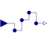
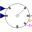
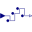

HoldHold the clocked, Real input signal and provide it as continuous-time output signal (zero order hold) |

|
Information
This information is part of the Modelica Standard Library maintained by the Modelica Association.
This block holds the clocked Real input signal u with a zero order hold and provides it as continuous-time output signal y. The clock of the input signal is inferred (that is, it needs to be defined somewhere else in the clocked partition).
To be more precise: The input signal u(ti) must be a clocked signal. The output signal y(t) is a piecewise constant continuous-time signal. When the clock of u ticks at time ti, the block output y(ti) = u(ti). Otherwise y(t), t ≥ti, is the value of u(ti) from the last clock activation at time ti. Before the first clock activation of u, the block outputs the value of parameter y_start. The value of this parameter is displayed below the icon.
Example
The following
example
samples a sine signal with a periodic clock of 20 ms period and delays it for 2 sample periods.
The resulting signal is hold with the Hold block. As a result, the clock of hold.u starts
ticking at 40 ms. The output hold.y of the block is a continuous-time signal that is present
from the start of the simulation. Before the first tick of the clock of hold.u, it is set
to -1.0 (= the value of parameter hold.y_start).
 |
 |
|
| model | simulation result |
Parameters (1)
| y_start |
Value: 0.0 Type: Real Description: Value of output y before the first tick of the clock associated to input u |
|---|
Connectors (2)
| u |
Type: RealInput Description: Connector of clocked, Real input signal |
|
|---|---|---|
| y |
Type: RealOutput Description: Connector of continuous-time, Real output signal |
Used in Examples (11)
|
ClockedWithDiscreteTextbookController Modelica.Clocked.Examples.SimpleControlledDrive Simple controlled drive with discrete textbook controller (period is not used in the controller) |
|
|
Modelica.Clocked.Examples.SimpleControlledDrive Simple controlled drive with discrete controller (period is used in the controller) |
|
|
ExactlyClockedWithDiscreteController Modelica.Clocked.Examples.SimpleControlledDrive Simple controlled drive with discrete controller and exact periodic clocks (period is used in the controller) |
|
|
ClockedWithDiscretizedContinuousController Modelica.Clocked.Examples.SimpleControlledDrive Simple controlled drive with discretized continuous-time controller |
|
|
Modelica.Clocked.Examples.CascadeControlledDrive Drive with clocked cascade controller where clocks are defined with sub-sampling and partitions with super-sampling |
|
|
Modelica.Clocked.Examples.CascadeControlledDrive Drive with clocked cascade controller where fastest partition is defined with a clock and slower partition is defined with super-sampling |
|
|
Modelica.Clocked.Examples.CascadeControlledDrive Drive with clocked cascade controller where all partitions are defined with exact (integer) clock that need to be compatible to each other |
|
|
Modelica.Clocked.Examples.Systems Simple example of a mixing unit where a (discretized) nonlinear inverse plant model is used as feedforward controller |
|
|
Modelica.Clocked.Examples.Systems Closed-loop throttle control synchronized to the crankshaft angle of an internal combustion engine |
|
|
Modelica.Clocked.Examples.Elementary.RealSignals Example of a Sample block for Real signals with direct feed-through in the continuous-time and the clocked partition |
|
|
Modelica.Clocked.Examples.Elementary.RealSignals Example of a Hold block for Real signals |
Used in Components (4)
|
Modelica.Clocked.Examples.Systems.Utilities.ComponentsThrottleControl Integrates the air mass flow into a cylinder. After the charge for one cylinder is complete, resets the mass to 0. |
|
|
Modelica.Clocked.Examples.Systems.Utilities.ComponentsThrottleControl Accounts for the induction-to-power stroke lag. |
|
|  |
Modelica.Clocked.ClockSignals.Clocks.Rotational Event clock generating a clock tick each time an observed input angle changed for a rotational-interval given as variable input |
|  |
Modelica.Clocked.RealSignals.Sampler Hold with (simulated) Digital-Analog converter effects and computational delay |